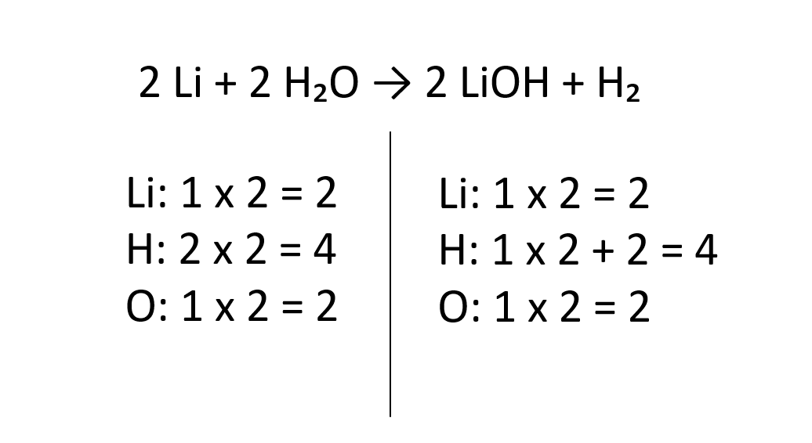

Reaktsiooni valemis peab lähtainetes ja saadustes olema sama elemendi aatomeid ühepalju!
Selle saavutamiseks tuleb lisada aatomite ette kordajaid.
Samm-sammult:
1. Loe kokku iga elemendi aatomi esinemise arvud
2. Tasakaalusta esimene aatom, pane madalama arvuga poolele korrutis mis teeb selle teise poolega võrdseks.
3. Tasakaalusta teine aatom, kui aatomil esineb indeksi number peab sellega korrutama.
4. Kui kõik samade aatomite arvud on mõlemal pool võrdsed, on tasakaalustatud õigesti.
Näide tasakaalustatud võrrandist:
